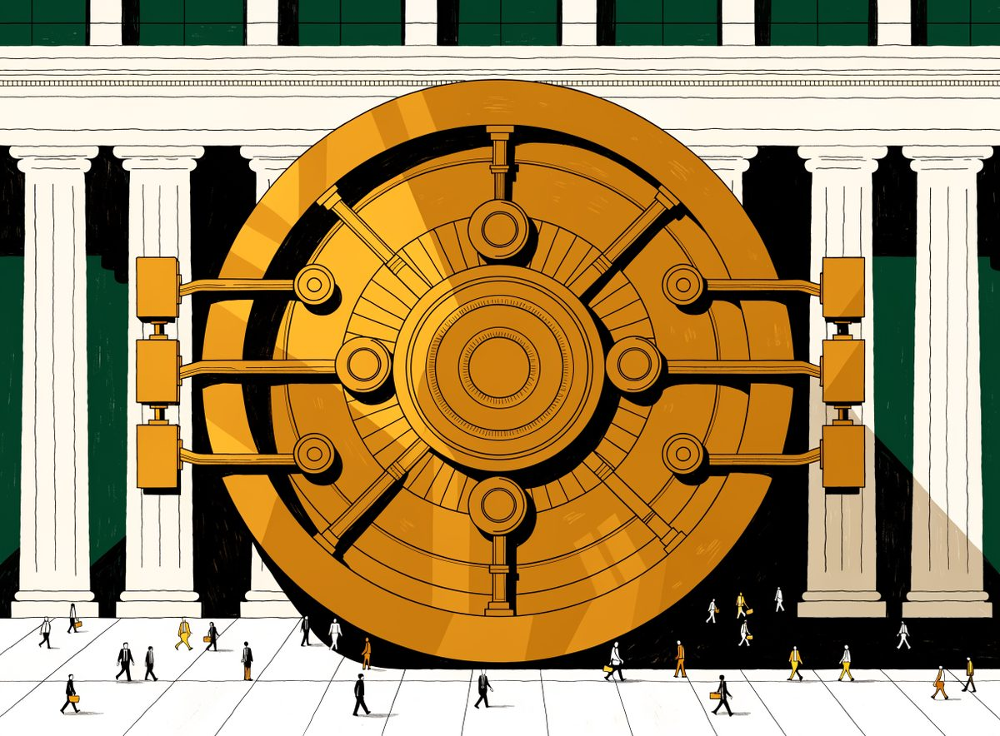
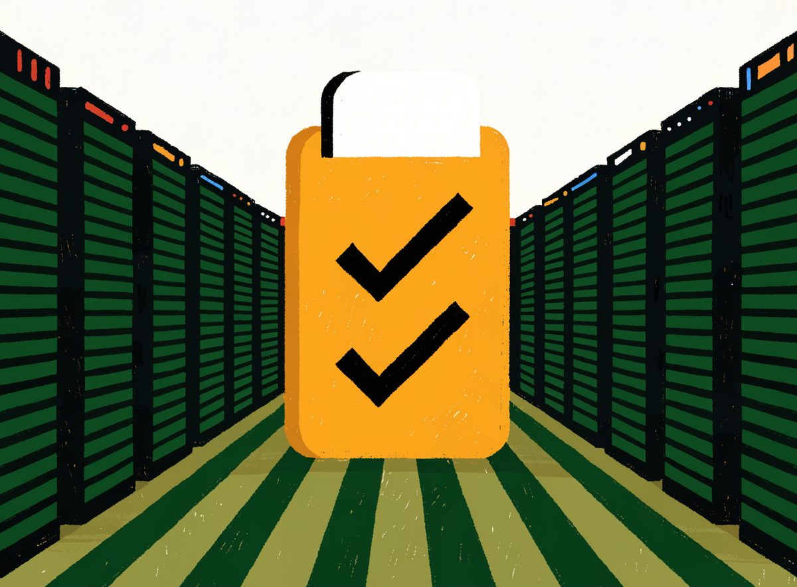
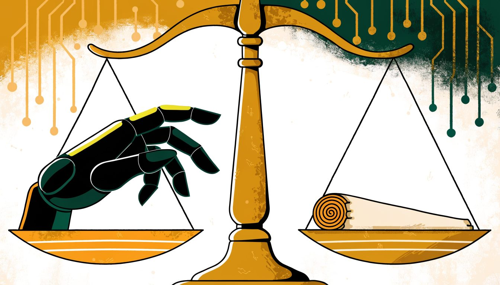

Governance · Risk · Compliance
GRC analyses of the world's largest enterprises.
I read how the world's biggest companies handle governance, risk, and compliance, then write it up plainly: which frameworks they run on, what they certify, where regulators have pushed back, and what their programs actually reveal. All of it grounded in public sources, with citations on every page.
Illustrations original to ZABEZ.com
Enterprise GRC postures, examined
Each case study takes one company and looks at how it actually runs its governance, risk, and compliance program, measured against the frameworks its industry operates on. Every claim is checked against public sources, with citations on each page so you can follow the trail yourself.

JPMorgan Chase
The strongest program on our scoreboard. Fortress-grade financial controls under SOX, Basel, and CCAR, and what every other compliance team can steal from it.

Amazon Web Services
The shared-responsibility model, audited: what AWS proves, and what it quietly leaves to you.
Microsoft
The most certified enterprise cloud, now carrying the governance weight of frontier AI.

Privacy engineering at planet scale, shadowed by consent battles and antitrust pressure.

Pfizer
GxP quality systems where a control failure is measured in patients, not dollars.
Meta
A program rebuilt under enforcement: record GDPR fines, consent orders, and the price of moving fast.
All six, side by side
NIST CSF 2.0 maturity, scored 1–5 from documented public posture. Same method, same evidence standard, every company. Assessed August 2026.
Scores are analytical judgments of documented posture, not audits. Method below.
Today's compliance stories, rewritten as case studies
Every morning I pick the governance, risk, and regulatory stories that matter, rewrite them as short case studies with the lesson spelled out, and cite the original reporting so you can dig deeper.
ETSI Proposes 17 Cybersecurity Standards to Support Cyber Resilience Act
ETSI has published 17 draft cybersecurity standards to underpin the EU Cyber Resilience Act. What this means for product manufacturers compliance time…
ICO Urges Police to Improve Data Governance in Facial Recognition Rollouts
The UK ICO has called on police forces to strengthen data governance around live facial recognition deployments. What this means for biometric data co…

UK Legal Regulator Raises AI Misuse Concerns
The Solicitors Regulation Authority has warned law firms about AI misuse risks. What this signals for professional services governance and the complia…
Three ways to use this site
Tell me who you are, and I'll tell you where the value is.
Career changers & students
Start with the free five-lesson course, grab the resume template, then follow the daily news to build the vocabulary interviewers expect.
Start the free course →Managers & recruiters
The case studies show you how I think: method, evidence standards, and judgment. The scoreboard is the fastest read.
Read a case study →Practitioners
The starter policy pack saves you a blank-page afternoon, and the daily digest keeps regulator moves on your radar in two minutes a day.
Get the free tools →Practical GRC tools, free
The tools I wish someone had handed me when I started: a resume template that actually gets read, policy documents you can adapt in an afternoon, and a plain-language guide to what GRC really is. Enter your email, grab what you need, and you'll also get the daily news digest. Unsubscribe anytime.
Resume Template
One-page, ATS-friendly GRC resume template (.docx) with the rules that get past filters, plus the exact phrasing patterns that work.
Starter Policy Pack
Three ready-to-adapt documents every GRC program needs first: Information Security Policy, Acceptable Use Policy, and a working Risk Register.
What Is GRC?
A plain-language introduction to governance, risk, and compliance: the frameworks, the daily work, and how to break in. Perfect for career-changers.
Learn GRC, the practical way
Two paths: start free with a five-lesson mini-course that shows you what GRC actually is, or go all the way with the full analyst program that ends with a real skillset and a resume that proves it.
GRC Foundations Free
Five short lessons, about an hour total. What GRC is, the frameworks that matter, a real day in the life, and how people actually break in.
GRC Analyst Program RM 499
Eight modules, 40+ lessons, four hands-on labs (audit, risk, policy, awareness), a job-hunting module, and resume bullets unlocked along the way. Lifetime access.
What I assess, and how
Years of security and GRC work across SaaS, cloud, and regulated environments, applied here to reading and scoring the public posture of the world's largest enterprises.
Governance
Board and management oversight structures, policy hierarchies, risk appetite statements, and accountability frameworks, mapped against COSO and NIST CSF 2.0 Govern.
Risk Management
Enterprise and third-party risk programs, risk registers, control testing, and how risk tolerance flows from the board to the control room.
Compliance
Certification posture (ISO 27001, SOC 2, FedRAMP, PCI DSS), regulatory exposure (GDPR, SOX, GLBA, HIPAA, GxP), and evidence of sustained audit readiness.
Security Posture
Control design across the NIST CSF 2.0 core, identify, protect, detect, respond, recover, evaluated from public reporting, trust centers, and breach history.
How the analyses are built
Every case study follows the same disciplined process, so you can compare companies on a level playing field.
Framework mapping
Identify the frameworks the sector actually operates under, FedRAMP for cloud, Basel/CCAR for banking, GxP for pharma, and map the company's documented posture to them.
Evidence collection
Public-posture evidence only: trust centers, certification registries, annual reports, 10-K risk factors, regulatory actions, breach disclosures, and auditor opinions.
Control assessment
Score each NIST CSF 2.0 function on a 1–5 maturity scale, using the strength and breadth of documented controls, not reputation.
Findings & watch items
Distill what the company does exceptionally, where the pressure points are, and what a GRC practitioner should watch next.
The analyst behind the lens
I'm Kok Jabez, a GRC and cybersecurity analyst who has spent years both building production systems and securing them. My day to day lives at the intersection of governance, risk, and compliance: the structures that let an organization take on risk on purpose instead of by accident.
I've worked inside the controls themselves, running security and compliance programs against the frameworks the industry actually audits on, NIST CSF, ISO 27001, SOC 2, GDPR, and more. I know what these look like from the inside, not just from the brochure. I hold CompTIA SecurityX (formerly CASP+), CompTIA CySA+, and CEH, with CISM in progress.
This portfolio applies the same lens to the biggest companies in the world: what they publish, what they certify, where regulators have pushed back, and what their programs say about how they really operate.
Location: Southeast Asia (UTC+8), available for remote GRC, security, and compliance work worldwide.
Let's talk GRC
Open to GRC consulting, security assessments, compliance projects, and full-time remote roles. I read everything that lands here and I reply to all of it.
hi@zabez.comOr connect on LinkedIn.